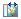

Page Editor Toolbar

The Page Editor toolbar is displayed whenever an HTML file is opened in the Page Editor. Each button is described below.
| Page Editor Toolbar | |
|---|---|
| cut - delete the currently selected widget and copy it to your clipboard. | |
| copy - copy the currently selected widget to your clipboard. | |
| paste - paste the widget from your clipboard (click paste, then click your cursor where you want to make the paste). | |
| Undo - undo the last change. Can undo multiple changes. | |
 | Redo - cancel the last "Undo". Can redo multiple "Undo"s. |
 | delete - delete the currently selected widget. |
 | Preview in Browser - displays the current page in a new browser window, as it will be rendered in the broswer (as opposed to how it looks in the Page Editor). |
 | Save - save the current file. |
 | Save As - save the current file under a new name. |
| Switch theme - switch to one of the Maqetta themes (claro or Sketch). See Switching Themes for more information. | |
 | Switch layout - switch to a different layout setting (Absolute positioning or Flow positioning) for new widgets added to the page. Existing widgets will maintain their existing layout setting. This button provides a convenient way to temporarily switch the layout setting while adding new widgets to your page. Once the current file is closed, the layout setting will revert back to the Maqetta system-wide layout setting. |
| Add note - add a yellow sticky-note to your page, where you can add comments for your reviewers. | |
 | Show mobile device silhouette - to show a mobile device silhouette. |
| Rotate mobile silhouette - to rotate the mobile device silhouette, switching between portrait and landscape views. | |
|  | Display Design - display the file in design view (default view). |
 | Display Source - display the file in source view. See Source Editing for more on working in source view. |
 | Split Vertically - split the canvas window vertically to show both design and source views. |
| Split Horizontally - split the canvas horizontally to show both design and source views. | |